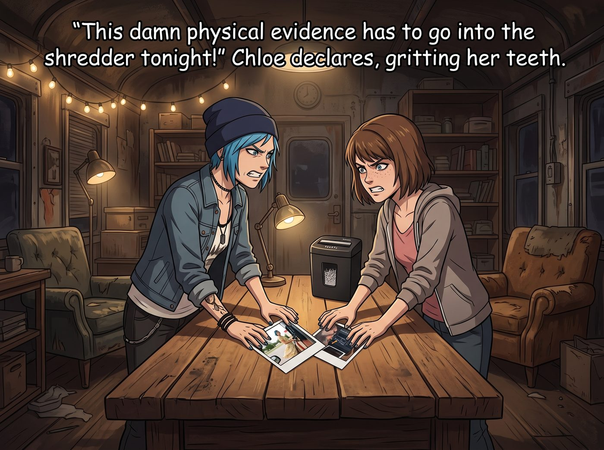

零日漏洞



當 Chloe 和 Max 帶著一肚子火氣和社死後的屈辱回到二號車廂時，她們把那兩張罪魁禍首的寶麗來照片狠狠地拍在了中央工作台上。
「這兩張該死的物理證據，今晚必須進碎紙機！」Chloe 咬牙切齒地宣佈。
然而，還沒等她們動手，一隻白皙的小手已經幽靈般地伸了過來，將那兩張照片抽了過去。
一、高精度掃描
實習生 Lily 端著熱牛奶，站在工作台旁。她低下頭，大眼睛像高精度掃描儀一樣，開始讀取這兩張她從未見過的上古黑歷史。
車廂裡的空氣瞬間安靜了。Chloe 和 Max 緊張地對視了一眼，心裡已經做好了被這個披著人皮的Excel用各種無情的合規黑話嘲諷到體無完膚的準備。畢竟，連州警都差點笑出內傷，這個平時就喜歡看她們吃癟的小惡魔，絕對會把這兩張照片掃描進資料庫，作為未來要脅她們的終極籌碼。
一秒。兩秒。三秒。
Lily 抬起頭，推了推反光的圓框眼鏡。她的表情極度嚴肅，甚至帶著一種學術研究般的莊重。
二、教科書級別的偽學術解讀
「Price 學姐，」Lily 首先舉起那張 Chloe 穿著淡黃色碎花裙的照片，軟糯的聲音裡充滿了專業的敬意，「我必須承認，我之前低估了您的社會工程學滲透能力。在阿卡迪亞灣這種典型的美國鄉村環境中，您主動放棄了具有高威脅特徵的龐克裝甲，選擇了這套飽和度極低、帶有強烈田園牧歌色彩的無害化視覺偽裝。這能瞬間將周圍碳基生物對您的防禦閾值降低百分之八十五。這是一次教科書級別的戰術易容。」
Chloe 愣住了。她原本已經準備好接受村姑之類的嘲笑，結果 Lily 居然把這條她這輩子最恨的裙子，解讀成了……高級特工的戰術易容？！
沒等 Chloe 反應過來，Lily 又舉起了第二張照片，目光轉向 Max。
「而 Caulfield 學姐的這張極限生理壓力測試紀錄，則更加珍貴。」Lily 看著照片裡 Max 被鎖喉、舌頭伸得老長、五官扭曲的樣子，語氣變得像法醫一樣冰冷且精確：「照片顯示，在遭受頸動脈短暫壓迫以及高鈉、高辣椒素的雙重物理打擊下，您的面神經產生了劇烈的代償性痙攣，導致舌肌不受控制地外伸以獲取更多氧氣。這份極端碳基反應數據，對於我建立車廂的醫療急救模型有著不可估量的參考價值。」
「……」「……」
Chloe 和 Max 呆若木雞。她們看著眼前這個一本正經的十九歲女孩，大腦瘋狂運轉，試圖分辨她到底是在一本正經地胡說八道，還是在進行某種更高維度的高級反諷。
「所以……」Max 嚥了一口口水，「妳覺得這兩張照片……不搞笑嗎？」
「搞笑？」Lily 歪了歪頭，大眼睛裡閃過一絲純潔的疑惑，「這明明是兩份極具研究價值的戰術與生理學文獻。在我的邏輯模組裡，它們是神聖的數據資產。我怎麼會——」
三、無法防禦的零日漏洞
就在 Lily 轉身，準備將這兩張照片放進她那個標有機密字樣的檔案夾裡的那個瞬間。
「噗……」
一個極其微弱的、短促的，絕對不該從一個行政黑魔法師嘴裡發出的聲音，在車廂裡響起。
Chloe 猛地瞇起眼睛：「等等，Lily，妳剛才是不是發出了某種漏氣的聲音？」
Lily 的背影瞬間僵硬了。她背對著兩人，肩膀開始出現了一種極其不自然、高頻率的微小抖動。她死死地咬住嘴唇，但那張 Max 翻著白眼伸出舌頭的照片，以及 Chloe 叼著煙穿碎花裙的反差感，實在是太過於強烈，直接擊穿了她那套引以為傲的絕對理性防火牆。
對於一個平時將世界看作是0和1、法規與合約的天才少女來說，這種純粹的、不講任何邏輯的碳基生物滑稽感，就像是一種無法防禦的零日漏洞。
「噗嗤……」Lily 終於破功了。她趕緊用手捂住嘴，但那種屬於十九歲女孩的、清脆且無法抑制的笑聲，還是從指縫裡漏了出來。
「老天！她笑了！」Chloe 像發現了新大陸一樣指著 Lily，「這個沒有感情的 Excel 表格居然笑了！！Maxine，快拍下來！這是醫學奇蹟！」
四、脫下防禦裝甲的瞬間
意識到自己的無情面具徹底碎裂，Lily 猛地轉過身。她的小臉因為憋笑而漲得通紅，眼角甚至擠出了一點生理性的淚水，但她依然試圖用最兇狠、但完全沒有說服力的語氣，強行重啟自己的合規模組：
「警……警告！兩位學姐！我剛才只是……面部神經因為氣流波動產生了物理抽搐！如果妳們敢把這件事記錄下來，我……我就把這兩張照片掃描成高清數位版，鑄造成不可篡改的數位典藏，並將它們永久廣播到公開的區塊鏈網路上，讓全世界的節點每天都來欣賞全美最硬核的碎花裙女神！」
這絕對是二號車廂有史以來最惡毒的技術威脅。
但看著那個一手拿著黑歷史照片、一手捂著嘴還在忍不住偷笑的粉色小熊實習生，Chloe 和 Max 不僅沒有害怕，反而相視大笑起來。
在這個瘋狂的賽博廢土裡，能讓這個天才黑客短暫地脫下那層冰冷的防禦裝甲，變回一個會因為蠢照片而笑場的普通女孩，這或許比任何一次駭客行動的成功，都讓她們感到溫暖。